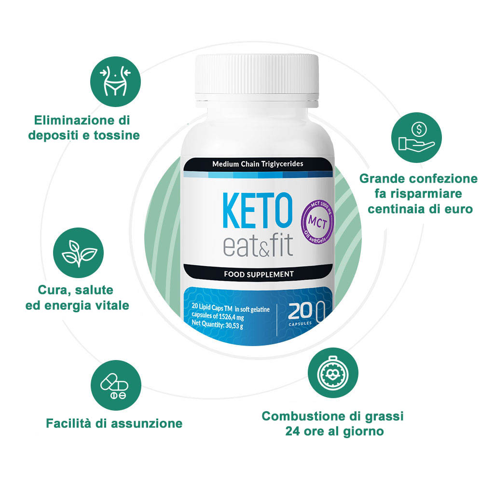

È necessario seguire il corso per sbarazzarsi di 15 kg! Lo confermano i risultati degli studi!
Buongiorno,
mi chiamo Carlo Ruggiero. Sono specialista in microbiologia. Voglio presentarvi la mia ultima e la più grande scoperta la cui efficacia è stata sostenuta dai diversi studi indipendenti: è un integratore sicuro al 100% che aiuta a bruciare il grasso e consente di perdere fino a 15 kg dopo il corso! È tutto questo senza esercizio fisico e tormenti.
Rispondi a te stessa se vuoi:
- Perdere 15 kg dopo il corso, nonostante il fatto che la precedente lotta per la silhouette dei sogni non ha dato i risultati desiderati.
- Eliminare il colesterolo cattivo nel corpo, normalizzando così i risultati dei test e riducendo del 88% il rischio di malattie del sistema circolatorio (inclusi infarto, ictus, aterosclerosi) dopo il corso.
- Normalizzare i livelli di zucchero nel sangue, migliorare il funzionamento del pancreas e ridurre la probabilità di sviluppare il diabete
- Sbarazzarsi dell'effetto yo-yo e godere di un bel fisico
- Ricaricarsi di energia e sentirsi bene, e anche migliorare la condizione della pelle, capelli e unghie
Puoi ottenere tutto questo senza cambiare il tuo stile di vita. Non devi andare dai nutrizionisti o in palestra. Puoi recuperare la tua salute e il benessere, migliorando notevolmente il tuo fisico quasi gratuitamente senza spendere migliaia di euro su procedure fraudolente.
Ascolta quello che voglio dirti oggi:
Indipendentemente dalla tua età, peso e condizioni di salute, oggi posso aiutarti a liberarti di un problema di sovrappeso o obesità, rafforzare la tua salute e migliorare l'autostima. I tuoi problemi genetici, la situazione in cui ti trovi o le malattie che limitano la combustione dei grassi sono ora irrilevanti! Grazie al metodo che la scienza ci ha dato, perderai fino a 15 kg dopo il corso e dimenticherai i chili in più che sono pericolosi per la salute.
Questo metodo è meglio della dieta!
- È completamente sicuro e al 100% composto da ingredienti che si assorbiscono perfettamente nel corpo. Hai bisogno di energia e calorie per funzionare correttamente – il digiuno non ti aiuterà mai a raggiungere i risultati desiderati, e anche se bruci qualche chilo – l'effetto yo-yo apparirà più velocemente di quanto pensi. Lo stesso vale per gli esercizi fisici – anche se il corpo umano è progettato per stare a piedi, gli esercizi innaturali in palestra sono un enorme carico sul sistema cartilagineo e osteoarticolare – ecco perché ogni atleta ha così tanti traumi e lesioni.
- Porta i risultati rapidi e duraturi, indipendentemente da ciò che mangi o da come trascorri il tuo tempo libero. Il tuo corpo passa naturalmente ad un'altra combustione dei grassi. L'energia che ottieni dal cibo e quindi le calorie che consumi diventano il carburante per il tuo metabolismo. Puoi mangiare bene e perdere peso.
- Introduce il tuo corpo in un regime brucia grassi di 24 ore! Brucia non solo il grasso accumulato per anni nel tuo corpo in forma di tessuto adiposo – limita inoltre l'assorbimento di grasso eccessivo.
- Migliora la salute e previene le malattie! È un metodo che non solo ti aiuterà a bruciare il grasso in eccesso, ma aiuterà anche a migliorare la tua condizione dovuta al sovrappeso.
- Brucia i grassi in modo efficace! I chili persi non saranno facili da recuperare. Nella modalità del metabolismo accelerato, l'effetto yo-yo è quasi impossibile.
- Potrai risparmiare un sacco di soldi! Non devi spendere soldi per nutrizionisti, personal trainer e costosi prodotti pseudo-dietetici. Basta usare un metodo innovativo per perdere fino a 15 kg dopo il corso!
Questo metodo naturale colpisce la radice del problema: elimina le cause del sovrappeso e consente anche di bruciare i grassi nelle zone più problematiche come l'addome o le braccia.
Grazie al mio metodo, finalmente ti libererai del peso in eccesso, ogni chilo in più depositato come tessuto adiposo viene convertito in energia e bruciato immediatamente. Questo metodo ti permetterà di dire addio alle taglie grandi. Comprare un abito da sposa non sarà più un problema. Il ciclo di assunzione eliminerà anche il dolore alle ginocchia o alla colonna vertebrale causato dal sovrappeso e l'eccessiva sudorazione nelle situazioni quotidiane non sarà più il tuo problema!
Il metodo ti permetterà di sbarazzarti di 15 kg già dopo il corso. Finalmente sarai in grado di indossare gli abiti da qualsiasi catena di negozi e gli uomini inizieranno a farti dei complementi. Non avrai problemi a mostrare il tuo corpo in piscina e la tua sicurezza di sé nella camera da letto sorprenderà il tuo partner. Tutto questo è grazie a una formula che aiuta a bruciare i grassi 24 ore al giorno.
Vuoi sapere come l'ho inventato?
Le statistiche sono spaventose: un italiano su tre è sovrappeso. Questo è un problema enorme, non solo in termini di estetica. Questo è principalmente un problema di salute fisica e mentale! Il bel aspetto ha sempre aggiunto fiducia in se stessi, la sensazione del corpo attraente è un vero carburante per ogni persona. Ci permette di essere più sicuri e andare avanti, ciò significa raggiungere il successo nella vita personale e professionale.
Essere sovrappeso non significa solo una mancanza di fiducia in se stessi e fallimenti nella vita. È anche un aumentato rischio di ictus, aterosclerosi, diabete o infarto. Questo porta a osteoartrite terribile, provoca forti dolori alle gambe e alla colonna vertebrale, causa i problemi come l'alluce valgo, l'irritazione e lo sfregamento (principalmente nella parte interna delle cosce). Mia figlia Angela ha sofferto dei problemi di sovrappeso per molti anni...
Angela era una ragazza giovane, bella ma paffuta. Non pensavo mai che avesse troppi chili in eccesso — la volevo bene così com'era. L'ho sempre considerata l'ideale, era la più intelligente e meravigliosa.
Quando è diventata adolescente, si sono manifestati i problemi ormonali. Il suo peso è rapidamente aumentato. Anche se continuavo a pensare che fosse la più bella, ho visto che non riusciva a gestire il suo peso. Si vergognava del suo corpo, indossava i vestiti troppo larghi. Non potevo guardare mia figlia soffrire, avevo paura per la sua salute. Inoltre, era sola, a causa della mancanza di fiducia in se stessa, non aveva alcuna relazione permanente. Volevo avere una famiglia felice, un genero e nipoti che correvano verso di me con un sorriso.
Una volta la figlia è tornata a casa piangendo. Il ragazzo con cui usciva ha scelto un'altra, come ha detto lei, "magra". Non riuscivo a sopportare l'idea che qualcuno non vedesse le ottime qualità di mia figlia solo perché aveva i problemi di sovrappeso.
La salute della figlia è la cosa più importante!
Nella mia famiglia, ho sempre fatto in modo che tutti facessero regolarmente i test di base. Stavo partendo dal presupposto che fosse meglio prevenire che curare. Quando ho visto i risultati dei test di mia figlia, sono rimasto scioccato. Si è scoperto che soffre di insulino-resistenza, che può anche portare al diabete di tipo 2! È davvero una malattia terribile. Il medico ha raccomandato una dieta riducente e ha detto: dovrebbe perdere peso, altrimenti sarà solo peggio.
La dieta di Angela era un tormento. Ha iniziato con una dieta del cavolo, poi è passata a una dieta consigliata da un nutrizionista, quando ha visto che nulla aiuta — ha iniziato un digiuno. Nei momenti peggiori beveva solo caffè e faceva colazione. Era esausta e arrabbiata, ma ha perso solo pochi chili. Una visita in palestra si è conclusa con un trauma alla caviglia e una delusione ancora maggiore. Non riuscivo a guardarla — lottando per la salute, lei la stava rovinando, dov'è la logica?
Padre scienziato o come ho inventato una ricetta per fisico snello!
Non c'è niente di peggio dell'impotenza. È difficile vedere una persona che ci è vicina soffrire, mentre non possiamo fare nulla. Ma è vero che non posso fare niente per mettere fine alle sofferenze di mia figlia? Dopotutto, sono uno scienziato! Non è per questo che ho passato la metà della mia vita in laboratorio a guardare e aspettare che le cose peggiorassero! Ho deciso di agire e ho iniziato la ricerca.
All'inizio passavo in laboratorio alcune ore al giorno. Ma poi ho deciso di lasciare il lavoro per un po' e dedicarmi completamente alla ricerca di un metodo innovativo per perdere peso. Sapevo che doveva esserci un modo, e se l'avessi trovato, avrei aiutato non solo mia figlia, ma anche milioni di persone in tutto il mondo. Ho passato in laboratorio circa un anno – quasi non tornavo a casa, facevo le ricerche intensive e alla fine ho portato a mia figlia le nuove capsule. Tutto era sicuro al 100%, quindi non ero preoccupato per gli effetti collaterali e le ho date ad Angela per vedere come avrebbe reagito il suo corpo.
La mia formula è ben riuscita. Dopo l'inizio dell'assunzione, mia figlia ha ammesso di sentirsi bene e di avere un umore migliore. In quel momento stava alla dieta chetogenica (a differenza di altre diete le piaceva tanto perché poteva mangiare quasi tutto e seguirla era molto facile), mentre le mie capsule aiutavano a raggiungere i risultati massimi. La sua silhouette cambiava drasticamente, ogni giorno diventava sempre più magra.
Due mesi dopo mia figlia ha indossato un bel vestito e ha gridato: "Papà! Finalmente mi va bene la taglia S!" Ero stupito, la mia invenzione mi ha sorpreso!
Grazie a questo metodo, Angela ha migliorato i risultati della dieta chetogenica così tanto che ha perso 28,5 kg in due mesi. Ora lei è felice e sorridente, non ha dolore alla colonna vertebrale, non si stanca e dorme bene, ma, soprattutto, si è sbarazzata del problema della resistenza all'insulina, ha migliorato i risultati dei test!
Fino ad ora, non c'era un modo per una sana perdita di peso! Il mio metodo consente di perdere peso velocemente e in modo sicuro!
Ora spiegherò perché il mio metodo è così efficace e dà il 100% dei risultati desiderati:
Fase I — preparazione del corpo per la perdita di peso
Questa è una fase estremamente importante che tutti dimenticano durante la dieta! Per perdere i chili in eccesso, è necessario prepararti per questo e pulire il corpo dai depositi e dalle tossine. Le tossine non solo portano a malattie pericolose, ma bloccano anche il metabolismo e mantengono il grasso nel corpo. Sono ovunque, non c'è il modo per proteggersi da loro!
Il metodo che ho creato ti permetterà finalmente di eliminare le tossine e i depositi che marciscono nel tuo intestino. Quindi, il tuo corpo non avrà più ostacoli e inizierà il processo di trasformazione del grasso in energia, grazie a questo brucerai il grasso in eccesso e sarai in grado di perdere fino a 15 kg dopo il corso!
Fase II — 24 ore di combustione del grasso
Le sostanze efficaci contenute nella formula circolano in tutto il corpo e sciogliono il grasso accumulato. Questo grasso viene immediatamente convertito in energia e bruciato. Non devi allenarti per raggiungere il fisico dei tuoi sogni e liberarti della cellulite.
Non devi aspettare a lungo per gli effetti, il tuo corpo inizierà a bruciare i grassi quasi subito! La modalità di combustione 24 ore su 24 ti consentirà di eliminare definitivamente il grasso corporeo! In questa fase, il grasso viene bruciato indipendentemente da ciò che fai! Perdi peso anche quando dormi.
Perché così tante persone si fidano di me e perché ho ottenuto il riconoscimento di scienziati da tutto il mondo?
È molto semplice — il 99% delle persone che usano il mio metodo ha perso fino a 15 kg dopo il corso!
Prima e dopo
Fino a questo punto, poche persone credevano in una perdita di peso sana e rapida. Ora tutto è cambiato — la mia formula rafforza l'effetto della dieta chetogenica così tanto che cambia le abitudini del corpo, modifica il processo di accumulo di grasso, trasformandolo in energia e bruciando istantaneamente. Questo aiuta a perdere peso in modo molto efficace e sicuro. Il caso di mia figlia è solo una goccia nel mare — più di 16 mila persone hanno provato il mio metodo! Ora godono di salute e snellezza.
Non mi credete? Massachusetts International Research Center ha sciolto tutti i dubbi e ha dimostrato all'unanimità l'efficacia del mio metodo! Questa scoperta sarà presto conosciuta in tutto il mondo! Già oggi gli studenti di medicina la imparano durante le lezioni di dietetica! Sono orgoglioso di me stesso, ma soprattutto sono felice di poter finalmente aiutare le persone in tutto il mondo!
È un metodo sicuro ed efficace al 100%!
Solo gli ingredienti sicuri al 100% ti permetteranno di goderti un corpo sano perché solo loro possono aiutare il tuo corpo! È molto semplice!
Gli amici ti invidieranno! Otterrai il riconoscimento e migliorerai la tua autostima!
Non dimenticherò mai come mia figlia è corsa da me per dire che il ragazzo per cui ha pianto due mesi fa, l'ha vista dopo il ciclo di assunzione e ha pregato di perdonarlo!
Il nuovo integratore dona qualcosa di più di una semplice perdita di peso: è una garanzia di successo e sicurezza. Ecco perché:
1. 100% efficace e sicuro
Come ho detto prima, il mio metodo è sicuro ed efficace. Contiene solo gli ingredienti sicuri, il contenuto di una piccola capsula è un miracolo per la perdita di peso.
2. Satura il corpo con acqua
Grazie alle proprietà del metodo, puoi ottenere tre volte più nutrienti che dal cibo normale! Ciò significa che non importa quello che consumi — la capsula sarà sempre più forte!
3. Funziona rapidamente!
Non devi aspettare i risultati per mesi — funziona già dalle prime settimane di assunzione. Il metodo ti permette di perdere peso anche quando dormi!
">Caratteristiche:
- Eliminazione di depositi e tossine pericolosi per il corpo
- Accelerazione del metabolismo
- Miglioramento della salute e prevenzione delle malattie pericolose legate all'obesità
- Combustione dei grassi 24 ore al giorno
- Facile da assumere
Rispondi alla domanda: ne vale la pena?
Vale la pena continuare a contare le calorie e preoccuparsi per ogni pasto? Rovinare la salute in palestra e avere le lesioni, le contusioni e le fratture? Vale la pena vergognarsi del proprio corpo e temere le opinioni degli altri?
Se vuoi liberarti di questi problemi, migliorare la tua salute e, infine, avere un bell'aspetto, non esitare, lasciati aiutare. Ho creato questa formula per mia figlia, ora la dono a te. Prendi e vivi la vita come vuoi — senza preoccupazioni, stress o malessere.
Perdere peso senza rischi!
Centinaia di studi indipendenti confermano — la formula di è una scoperta su scala globale! Ti permetterà di perdere 15 kg dopo il corso senza effetti collaterali! Inoltre, la formula di ha ricevuto il prestigioso Consumer Award, quindi puoi essere sicura che funzionerà anche nel tuo caso.
Garanzia di marchio
Massachusetts International Research Center ti dà il 100% di fiducia nell'originalità del prodotto. Qui puoi ordinare la mia formula unica, grazie alla quale puoi perdere fino a 15 kg dopo il corso.
Garanzia di qualità
Con questa garanzia, puoi essere sicura che è composto da ingredienti efficaci al 100% che non solo aiutano a perdere peso, ma si prendono cura di tutto il tuo corpo.
Garanzia di conformità
L'efficacia di è confermata da fino al 99% degli intervistati, che quasi subito dopo l'inizio dell'uso delle capsule hanno iniziato a notare gli effetti positivi. È una garanzia che raggiungerai l'obiettivo desiderato!
è la tua strada per un corpo da sogno!
Oggi, le aziende farmaceutiche di tutto il mondo stanno lottando per – tutti mi chiedono di vendere un brevetto e mi offrono un sacco di soldi. So che se le mie capsule arrivano sul mercato, saranno molto costose! Voglio che tutti possano permettersi di acquistare il mio prodotto, quindi prima di vendere il brevetto, condivido la formula con i miei compatrioti!
Ora puoi ottenere le capsule con un enorme sconto del 50%. Lo faccio, perché voglio vivere in un paese di persone felici!
Approfitta di questa opportunità prima che le aziende farmaceutiche giapponesi ricevano la mia formula e venderanno il prodotto ai prezzi alti. Ordina ora – senza pagamenti online, carte o creazione di un account cliente. Basta compilare il modulo e pagare alla consegna!
Distinti saluti, Carlo Ruggiero